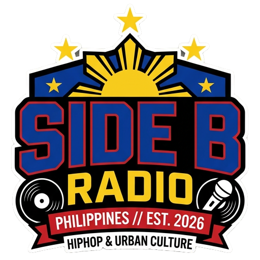

local scene
Loading local scene...
Pulling three indie / underground signal cards from the feed sources.
Underground rotation for indie rap, Pinoy cuts, and records that hit harder after dark.

Pulling three indie / underground signal cards from the feed sources.
Pulling three indie / underground international cards from the feed sources.